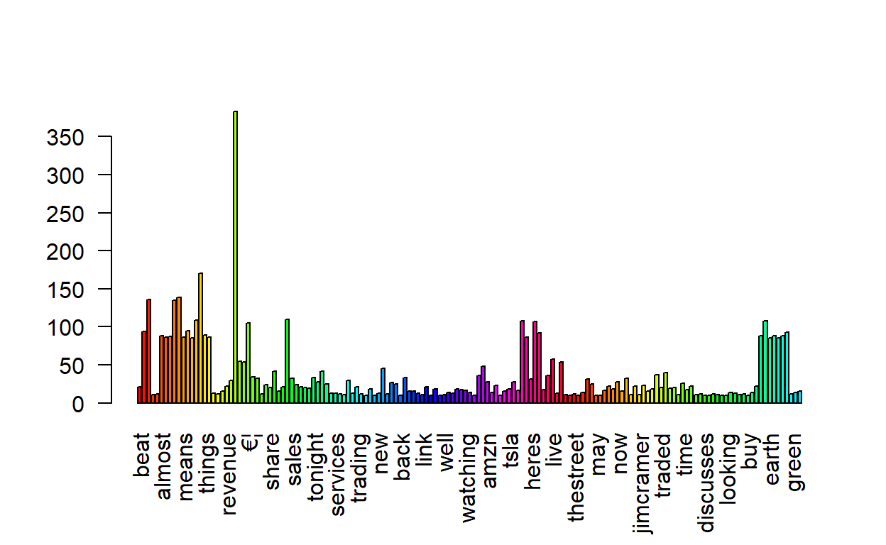
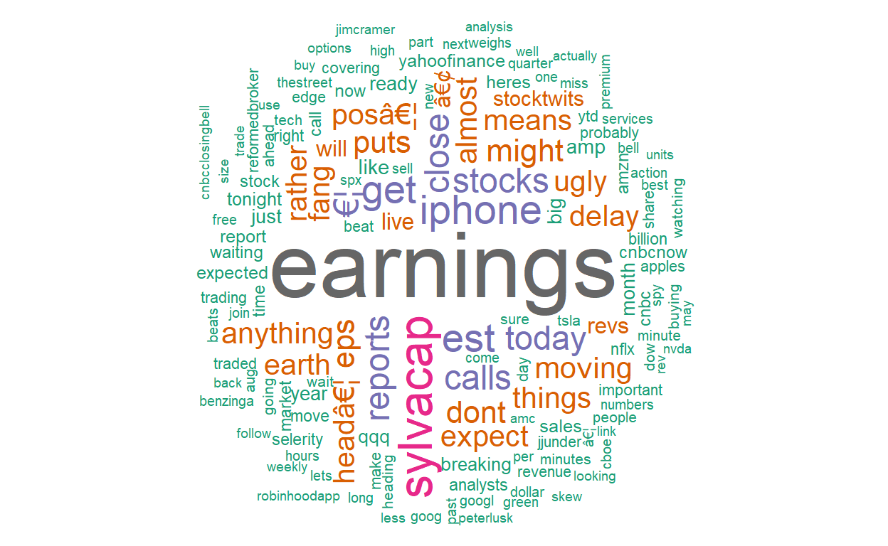

Collection of Wordcloud created with R
A short description of the post.
Birasafab true
2022-03-10
Wordcloud made with ‘wordcloud2’ package
wordcloud in star shape
Bar plot by word frequencies

Wordcloud

The
wordcloud2
package is not working properly to allow me to produce additional
wordcloud
shapes. This issue I will investigate and come up with a solution to it.
thank you for being patient!